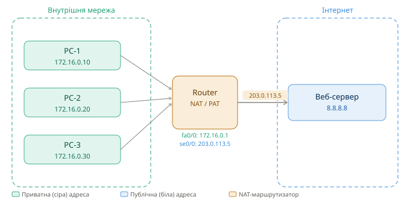

NAT/PAT в Cisco IOS — Шпаргалка
Курс: Комп'ютерні мережі | 2 курс
1 Навіщо потрібен NAT
IPv4-адреси публічного простору — вичерпний ресурс. Кожна організація отримує від провайдера одну або кілька публічних (білих) IP-адрес, тоді як усередині мережі пристрої використовують приватні (сірі) адреси з діапазонів RFC 1918:
| Діапазон | CIDR | Кількість адрес |
|---|---|---|
10.0.0.0 – 10.255.255.255 |
/8 | ~16 млн |
172.16.0.0 – 172.31.255.255 |
/12 | ~1 млн |
192.168.0.0 – 192.168.255.255 |
/16 | ~65 тис |
Приватні адреси не маршрутизуються в Інтернеті. NAT (Network Address Translation) вирішує цю проблему — він замінює приватну адресу на публічну при виході пакету назовні, і навпаки — при поверненні відповіді.
2 Термінологія Cisco NAT
| Термін | Значення |
|---|---|
| Inside local | Приватна адреса хоста всередині мережі |
| Inside global | Публічна адреса, якою хост представлений в Інтернеті |
| Outside local | Адреса зовнішнього хоста з точки зору внутрішньої мережі |
| Outside global | Реальна публічна адреса зовнішнього хоста |
| Inside interface | Інтерфейс маршрутизатора, що дивиться у внутрішню мережу |
| Outside interface | Інтерфейс маршрутизатора, що дивиться в Інтернет |
3 Схема мережі (для прикладів)
📁 Зображення:
assets/network-configs_cisco-nat_1.svg

4 PAT з overload — вся мережа за однією адресою
PAT (Port Address Translation) — найпоширеніший сценарій. Всі пристрої внутрішньої мережі виходять в Інтернет через одну публічну IP-адресу, а розрізняються за номерами TCP/UDP-портів. Cisco також називає це NAT overload.
PC-1 172.16.0.10:4500 ──► 203.0.113.5:10001 ──► 8.8.8.8:443
PC-2 172.16.0.20:5100 ──► 203.0.113.5:10002 ──► 8.8.8.8:443
PC-3 172.16.0.30:6200 ──► 203.0.113.5:10003 ──► 8.8.8.8:80
Маршрутизатор зберігає таблицю трансляцій і знає, якій внутрішній адресі повернути відповідь.
4.1 Варіант 1 — overload через адресу інтерфейсу (найпростіший)
Підходить коли є одна публічна адреса, призначена безпосередньо на зовнішній інтерфейс.
! Крок 1 — Позначити інтерфейси
interface FastEthernet0/0
ip address 172.16.0.1 255.255.255.0
ip nat inside
no shutdown
interface Serial0/0
ip address 203.0.113.5 255.255.255.252
ip nat outside
no shutdown
! Крок 2 — ACL: які адреси потрібно транслювати
access-list 1 permit 172.16.0.0 0.0.0.255
! Крок 3 — Увімкнути NAT overload на зовнішньому інтерфейсі
ip nat inside source list 1 interface Serial0/0 overload
4.2 Варіант 2 — overload через пул адрес
Підходить, якщо є кілька публічних адрес, але всі перевантажуються через PAT.
! Крок 1 — Позначити інтерфейси (аналогічно варіанту 1)
interface FastEthernet0/0
ip address 172.16.0.1 255.255.255.0
ip nat inside
interface Serial0/0
ip address 203.0.113.5 255.255.255.252
ip nat outside
! Крок 2 — Визначити пул публічних адрес
ip nat pool PAT-POOL 203.0.113.5 203.0.113.5 prefix-length 30
! (або діапазон: 203.0.113.5 203.0.113.6 prefix-length 29)
! Крок 3 — ACL для внутрішніх адрес
access-list 1 permit 172.16.0.0 0.0.0.255
! Крок 4 — Прив'язати ACL до пулу з overload
ip nat inside source list 1 pool PAT-POOL overload
Який варіант використовувати?
Якщо є лише одна публічна IP-адреса на інтерфейсі — використовуй варіант 1 (interface Serial0/0 overload). Це простіше і не потребує оголошення пулу.
5 Dynamic NAT — пул без overload
Кожен внутрішній хост отримує унікальну публічну адресу з пулу. Якщо адреси у пулі закінчились — нові з'єднання відхиляються. Підходить, коли публічних адрес вистачає для всіх.
! Позначити інтерфейси
interface FastEthernet0/0
ip address 172.16.0.1 255.255.255.0
ip nat inside
interface Serial0/0
ip address 203.0.113.30 255.255.255.224
ip nat outside
! Пул публічних адрес (203.0.113.1 – 203.0.113.20)
ip nat pool DYN-POOL 203.0.113.1 203.0.113.20 prefix-length 27
! ACL: лише перші 31 хост кожної підмережі
access-list 7 permit 172.16.0.0 0.0.0.31
! Прив'язати без overload (один до одного)
ip nat inside source list 7 pool DYN-POOL
Динамічна таблиця трансляцій
На відміну від статичного NAT, записи у таблиці з'являються лише при першому пакеті і видаляються після закінчення таймауту (за замовчуванням 86400 сек для TCP, 300 сек для UDP).
6 Static NAT — один до одного
Постійне відображення конкретної приватної адреси на конкретну публічну. Використовується для серверів, до яких потрібен доступ ззовні (web, mail, FTP).
! Позначити інтерфейси
interface FastEthernet0/0
ip address 172.16.0.1 255.255.255.0
ip nat inside
interface Serial0/0
ip address 203.0.113.30 255.255.255.252
ip nat outside
! Статичне відображення (inside local → inside global)
ip nat inside source static 172.16.0.100 203.0.113.1 ! веб-сервер
ip nat inside source static 172.16.0.101 203.0.113.2 ! mail-сервер
Постійний запис у таблиці
Статичні NAT-записи активні постійно — незалежно від наявності трафіку. Це означає, що ззовні завжди можна ініціювати підключення до внутрішнього сервера.
7 Static NAT для порту (Port Forwarding / DNAT)
Перенаправлення трафіку на конкретний порт внутрішнього хоста. Корисно, коли внутрішній сервер слухає на нестандартному порту, або потрібно опублікувати кілька сервісів через одну публічну адресу.
! Перенаправити HTTP (80) ззовні на внутрішній веб-сервер (порт 8080)
ip nat inside source static tcp 172.16.0.100 8080 203.0.113.5 80
! Перенаправити RDP (3389) ззовні на конкретний ПК
ip nat inside source static tcp 172.16.0.50 3389 203.0.113.5 3389
! Перенаправити SSH (22) ззовні
ip nat inside source static tcp 172.16.0.10 22 203.0.113.5 2222
! Перевірка
show ip nat translations
! Pro Inside global Inside local Outside local Outside global
! tcp 203.0.113.5:80 172.16.0.100:8080 --- ---
! tcp 203.0.113.5:3389 172.16.0.50:3389 --- ---
8 Перевірка та діагностика
! Переглянути таблицю активних трансляцій
show ip nat translations
show ip nat translations verbose ! детально (з таймаутами)
show ip nat translations tcp ! тільки TCP
! Статистика NAT
show ip nat statistics
! Очистити таблицю трансляцій вручну
clear ip nat translation * ! очистити всі динамічні записи
clear ip nat translation inside 172.16.0.10 outside 8.8.8.8
clear ip nat translation tcp inside 172.16.0.10 80 outside 8.8.8.8 80
! Debug (обережно на завантажених пристроях!)
debug ip nat ! всі події NAT
debug ip nat detailed ! детальний вивід
no debug all ! зупинити debug
8.1 Приклад виводу show ip nat translations
Router# show ip nat translations
Pro Inside global Inside local Outside local Outside global
tcp 203.0.113.5:10001 172.16.0.10:4500 8.8.8.8:443 8.8.8.8:443
tcp 203.0.113.5:10002 172.16.0.20:5100 8.8.8.8:443 8.8.8.8:443
tcp 203.0.113.5:10003 172.16.0.30:6200 8.8.8.8:80 8.8.8.8:80
--- 203.0.113.1 172.16.0.100 --- --- ! статичний
9 Типові проблеми
| Симптом | Причина | Рішення |
|---|---|---|
| Трафік не транслюється | Інтерфейси не позначені ip nat inside/outside |
Перевірити show ip nat statistics → interfaces |
| ACL блокує весь трафік | Занадто жорсткий ACL | Переглянути ACL, переконатися що є permit |
| Таблиця трансляцій порожня | ACL не збігається з адресами | debug ip nat для перевірки |
| Статичний NAT не працює ззовні | Немає маршруту назад | Перевірити маршрутизацію до inside global |
| PAT перестав працювати | Вичерпались порти (рідко) | Пул адрес замість одного IP |
📌 Зберегти конфігурацію:
copy running-config startup-configабоwr
Джерело
Стаття базується на офіційній документації Cisco TAC. Оригінал (англійською): Configure Network Address Translation